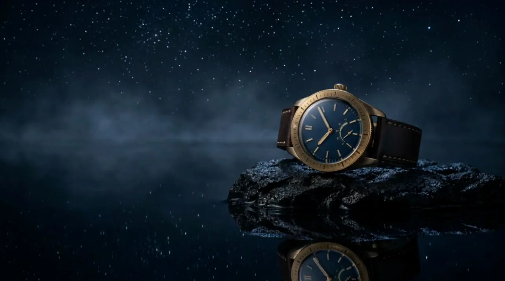
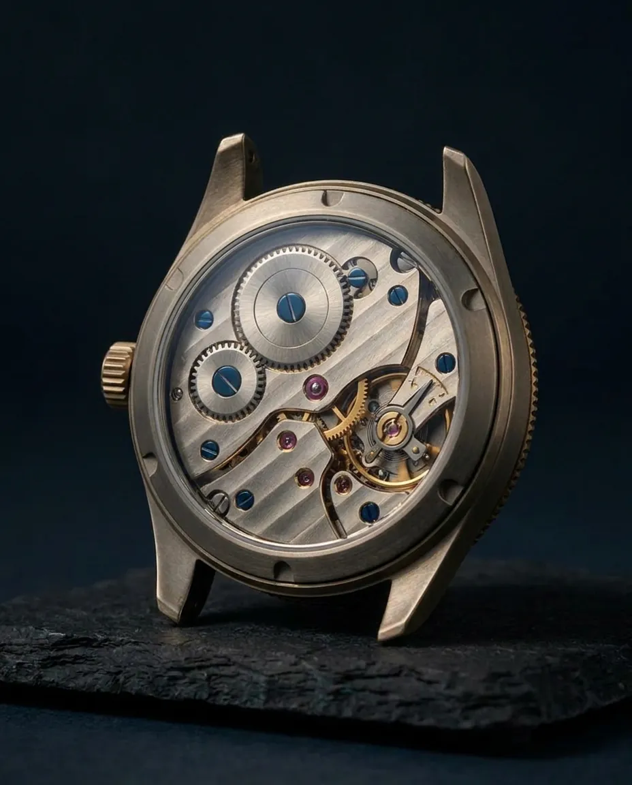
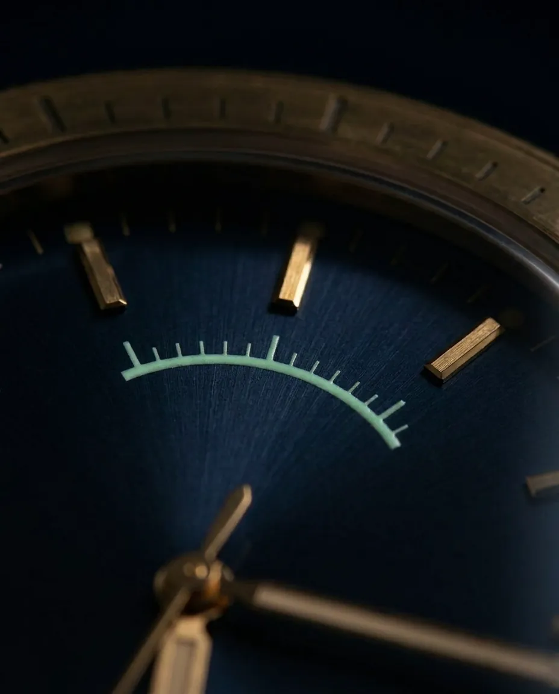
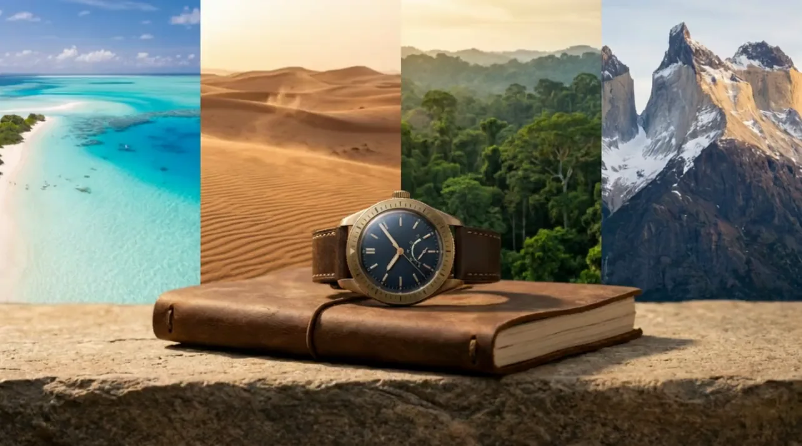
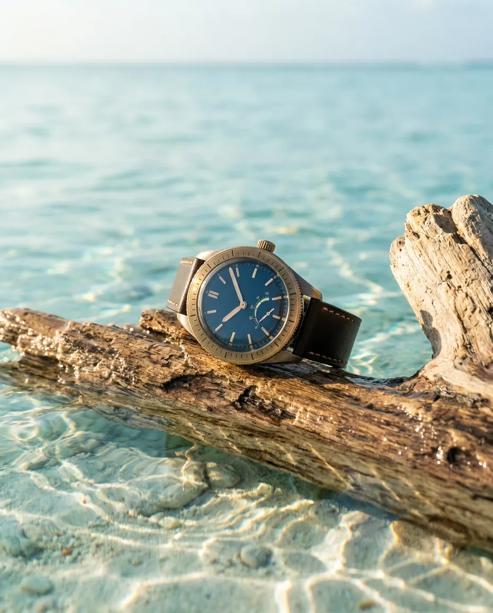
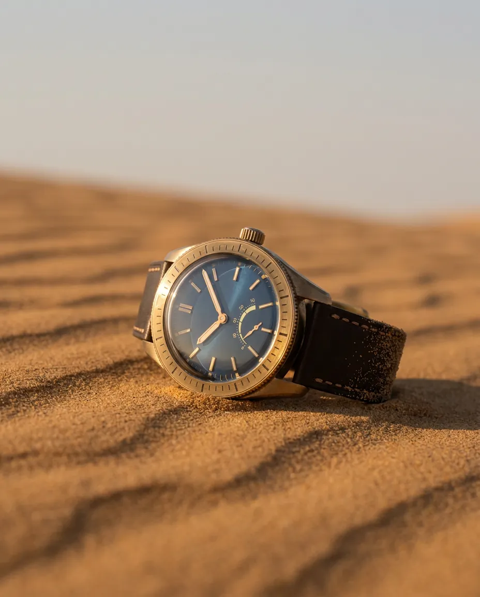
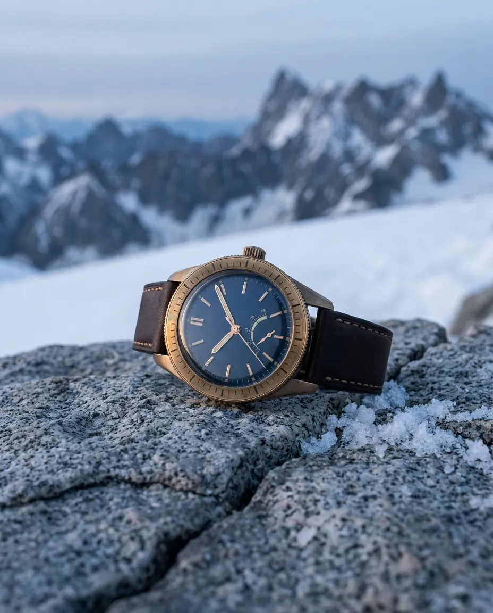
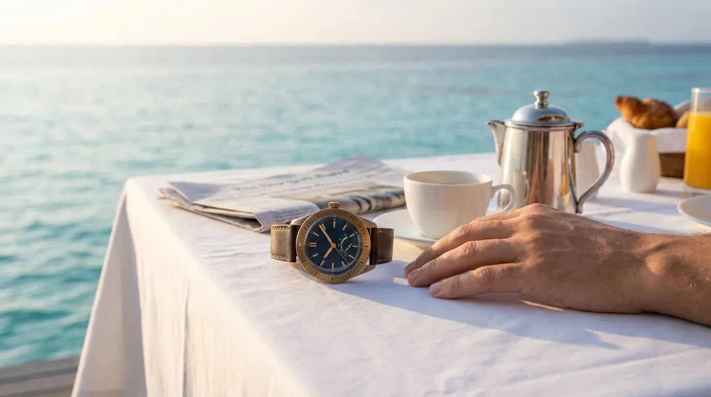
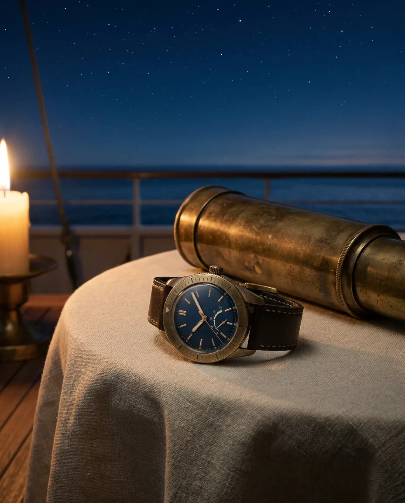
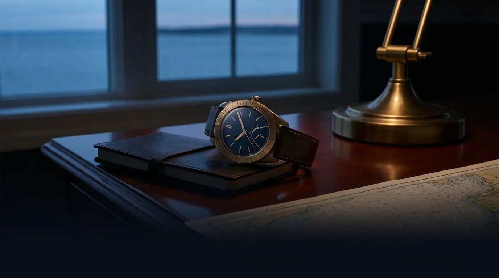

ISOLARIO
Not found on any map.
Begin the Crossing
Sailors spoke of an island that appeared on no chart.
Cartographers drew it anyway - then erased it.
ISOLARIO is what remains: an instrument for those who travel beyond the drawn world.
The Instrument
A mechanical heart, wound by movement. Sapphire above, sapphire below. Hand-finished in a workshop that does not advertise its address.


CALIBRE I-88 · 72-HOUR RESERVE · 300 M · TITANIUM AND AGED BRASS

Four terrains. One constant.
Lagoon
A depth scale that wakes underwater.
Desert
A second hour on the bezel. Home stays with you.
Jungle
A bezel that remembers north.
Mountains
An altitude scale in brass.
Four terrains. One constant.

Lagoon
A depth scale that wakes underwater.

Desert
A second hour on the bezel. Home stays with you.
Jungle
A bezel that remembers north.

Mountains
An altitude scale in brass.
The Eighty-Eight
Eighty-eight pieces. Each named for a constellation.
There will be no more.
No. 43 - OCTANS


The instrument does not change with the scenery.
